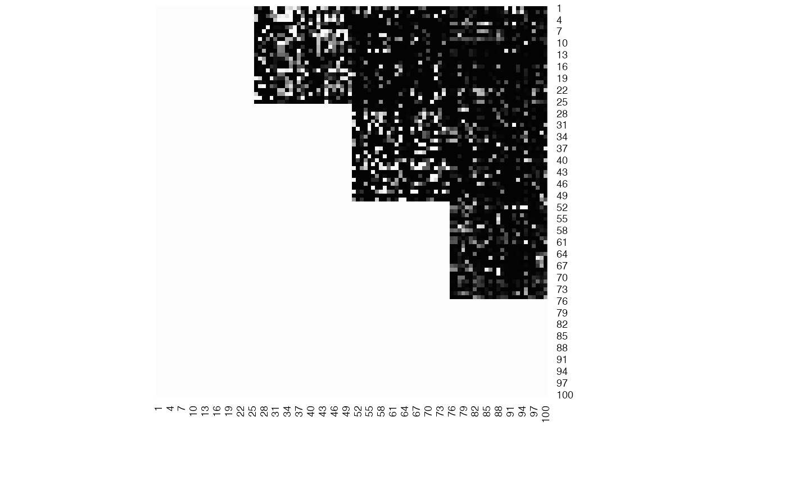
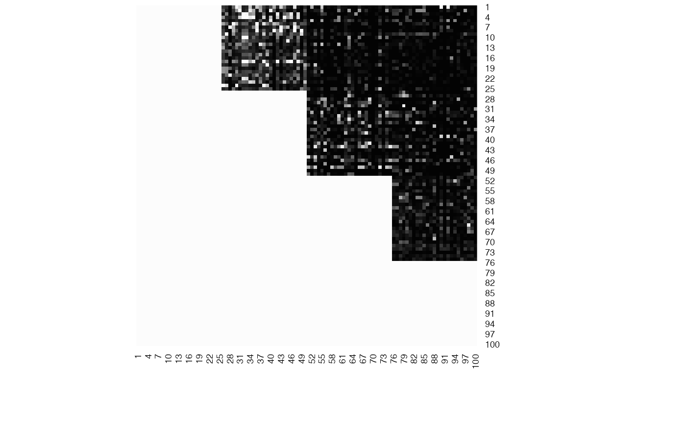

Plot result of Selectboost for Cascade inference.
# S4 method for network.confidence,ANY plot(x, col = gray((1:99)/100, alpha = NULL), ...)
Arguments
| x | A |
|---|---|
| col | Colors for the plot. |
| ... | Additionnal arguments passed to the heatmap function. |
Value
Nothing.
Details
Extending results from the Cascade package: providing confidence indices for the reverse engineered links.
Reference for the Cascade modelling Vallat, L., Kemper, C. a., Jung, N., Maumy-Bertrand, M., Bertrand, F., Meyer, N., Pocheville, A., Fisher, J. W., Gribben, J. G. et Bahram, S. (2013). Reverse-engineering the genetic circuitry of a cancer cell with predicted intervention in chronic lymphocytic leukemia. Proceedings of the National Academy of Sciences of the United States of America, 110(2), 459-64.
Reference for the Cascade package Jung, N., Bertrand, F., Bahram, S., Vallat, L. et Maumy-Bertrand, M. (2014). Cascade : A R package to study, predict and simulate the diffusion of a signal through a temporal gene network. Bioinformatics. ISSN 13674803..
References
selectBoost: a general algorithm to enhance the performance of variable selection methods in correlated datasets, Frédéric Bertrand, Ismaïl Aouadi, Nicolas Jung, Raphael Carapito, Laurent Vallat, Seiamak Bahram, Myriam Maumy-Bertrand, https://arxiv.org/abs/1810.01670
See also
boost, fastboost, selectboost, inference
Other Selectboost functions:
autoboost(),
boost,
fastboost(),
selectboost_cascade
Examples
data(net_confidences)#> Warning: data set ‘net_confidences’ not foundplot(net_confidence)plot(net_confidence_.5)plot(net_confidence_thr)